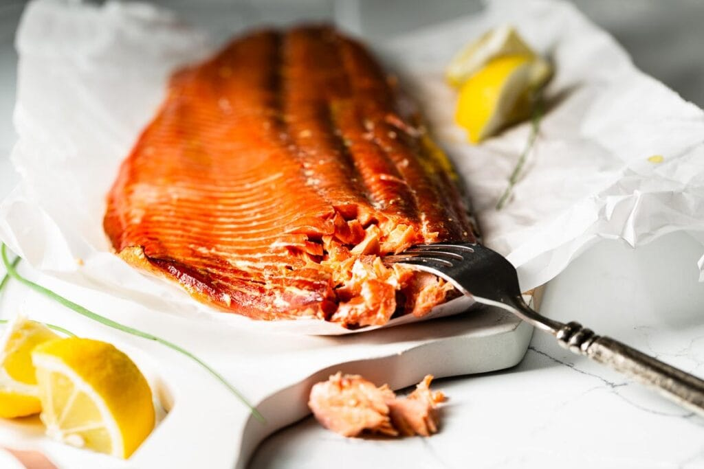

Smoked Salmon

Description
Smoking the perfect salmon shouldn't be a chore. That's why I've found the perfect recipe for all your fishy needs. Please note, you will need a charcoal grill for this recipe (and wood chips to go with it).
Ingredients
- 2 tablespoons brown sugar
- 1 tablespoon kosher salt
- 2-4 lb salmon fillet (w/ skin on & bones removed)
- 2 Cups alder or applewood or cherry smoking chips (smoked in water of charcoal)
Steps to Success
- Create the dry brine by mixing the sugar and salt together in a small bowl.
- Place the salmon filet skin-side down on a wire rack on top of a rimmed baking sheet. Sprinkle the brine mixture over the entire filet to coat. Place in the refrigerator uncovered for 1 hour to 2 hours before smoking.
- Set up your smoker for indirect cooking with a water bath drip pan in place, and preheat according to the manufacturer's instructions to 225°F.
- While the smoker heats up, remove the salmon from the refrigerator and dry off any excess moisture with paper towels.
- When the smoker starts smoking and reaches 225° F, place the salmon skin-side down on a sheet of foil and transfer to the smoker.
- The salmon is finished smoking when the internal temperature reaches 140° F. Begin checking for doneness after 30 minutes using a probe thermometer.
- Remove from the smoker and rest for 5 minutes before serving, or cover and chill in the refrigerator for up to 1 week.